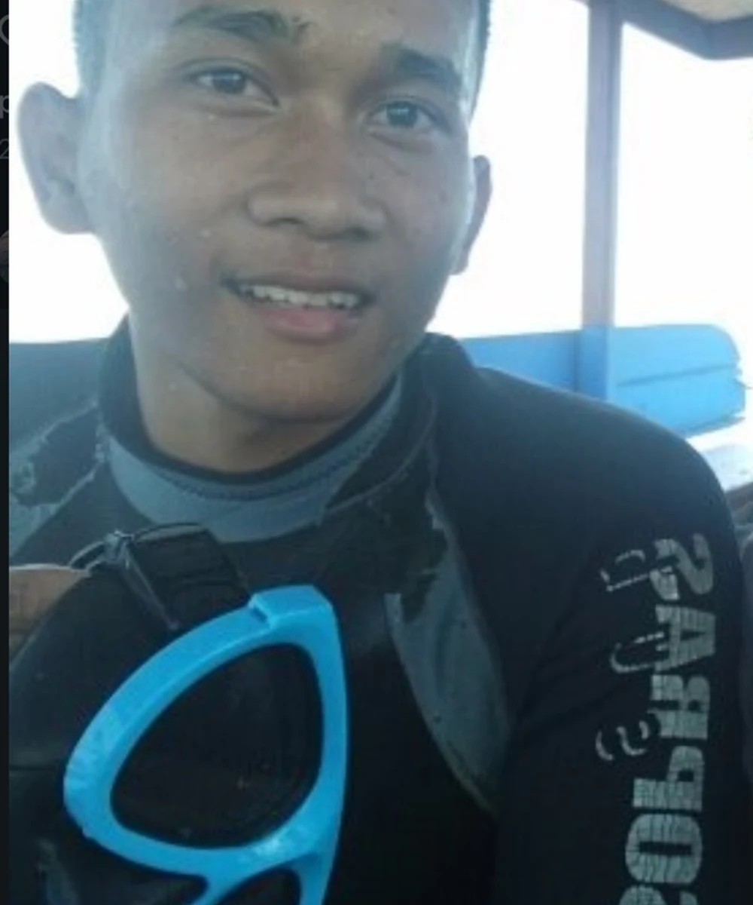

Join local captain and boat owner Putu Diyo for 2–3 hours on the Bali Sea: watch wild dolphins, experience them from the water and enjoy a snorkeling stop.
Check availability on WhatsApp →No middleman. You book directly with Diyo.
Your own traditional boat for up to 4 guests.
The dolphins are wild and free. Sightings and distance can never be guaranteed.
One private morning on the Bali Sea.
The experience lasts around 2–3 hours. Choose an early sunrise departure around 5:30 AM or a later morning departure around 8:30 AM.
The tropical sun gets strong very quickly on the open water. Diyo strongly recommends wearing a UV-protection shirt. If you don’t have one, apply plenty of water-resistant sunscreen before the trip and reapply as needed. A severe sunburn can happen surprisingly fast on the sea, and Diyo would much rather you return with great memories than burned skin.
This video was taken on the water in Lovina. Choose the 5:30 AM departure if you want to experience sunrise as part of your private dolphin tour.

I’m from Lovina and I take guests out on my own boat. I want the trip to feel personal, simple and respectful to the wildlife.
Why “Twin Dolphins”? I named the business after my twin daughters. They are the reason I want to build something of my own here in Lovina.
When you join my tour, you’re supporting a local family and a more responsible way of tourism.
The complete private experience lasts around 2–3 hours.
Choose a sunrise departure around 5:30 AM or a later morning departure around 8:30 AM.
You enter the water and hold onto a bar attached to the boat while the boat moves. This gives you an underwater view as wild dolphins swim in the area. The dolphins are never touched or fed, and encounters cannot be guaranteed.
The listed price is for a private boat for up to 4 guests.
The private boat, Diyo as captain, dolphin watching, the in-water dolphin experience, snorkeling, snorkeling equipment for up to 4 guests and drinking water.
Wear swimwear and ideally a UV-protection shirt. Diyo strongly recommends good sun protection because the tropical sun and reflection from the sea can cause sunburn quickly. Use water-resistant sunscreen and bring a towel.
No. These are wild dolphins, so sightings and how close they come cannot be guaranteed.
Message Diyo directly on WhatsApp with your preferred date and group size.